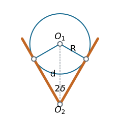

Slider-Crank and Quick-Return Linkages
Kinematics and Machine Dynamics · Chapter 4
Chapter overview
- Locate dead-center positions and calculate stroke.
- Compare in-line and offset slider-cranks.
- Compute working and return times at constant crank speed.
- Relate quick return to linkage geometry.
Geometry and sign convention

Crank center O=(0,0), crank pin A=(R\cos\theta,R\sin\theta), slider pin B=(x,E). The right-hand assembly uses x>R\cos\theta.
Position from the rod-length constraint
(x-R\cos\theta)^2+(E-R\sin\theta)^2=L^2.
For the right-hand branch,
\boxed{x=R\cos\theta+\sqrt{L^2-(E-R\sin\theta)^2}.}
A sufficient strict condition for full crank rotation on this branch is
L>R+|E|.
Equality is a limiting singular case.
In-line limiting positions
Set E=0 and assume L>R.
The crank and connecting rod are collinear at \theta=0 and \theta=\pi:
x_{\max}=L+R,\qquad x_{\min}=L-R.
\boxed{S=x_{\max}-x_{\min}=2R.}
Each stroke occupies half a revolution, so their times are equal at constant crank speed.
Dead center: velocity and force
At either smooth limiting position, dx/d\theta=0, hence
\dot x=\frac{dx}{d\theta}\omega=0.
An ideal slider force has input-equivalent torque
\tau=F_x\frac{dx}{d\theta}=0
at dead center. A force on the slider alone cannot initiate crank rotation from this exact posture.
Zero velocity does not mean zero acceleration
For constant \omega, \ddot x=\omega^2x''(\theta).
For the in-line mechanism:
\ddot x(0)=-\omega^2\left(R+\frac{R^2}{L}\right), \ddot x(\pi)=\omega^2\left(R-\frac{R^2}{L}\right).
Acceleration and inertia forces can be substantial even though slider velocity vanishes.
Offset limiting positions
Assume 0<E<L-R and L>R.
At dead center the distance OB is either L+R or L-R. Since the guide is at height E,
x_{\max}=\sqrt{(L+R)^2-E^2}, x_{\min}=\sqrt{(L-R)^2-E^2}.
The stroke is their difference. It exceeds 2R for nonzero offset under these assumptions.
The crank angles between limits
Define the acute angles
\phi_1=\arcsin\frac{E}{L-R},\qquad \phi_2=\arcsin\frac{E}{L+R}.
With positive counterclockwise rotation, the longer stroke interval is
\alpha=\pi+\phi_1-\phi_2,
and the shorter interval is \beta=\pi-\phi_1+\phi_2. Their sum is 2\pi.
Time ratio
For constant input speed magnitude |\omega|:
t_{\mathrm{long}}=\frac{\alpha}{|\omega|},\qquad t_{\mathrm{short}}=\frac{\beta}{|\omega|}.
\boxed{Q=\frac{t_{\mathrm{long}}}{t_{\mathrm{short}}} =\frac{\pi+\phi_1-\phi_2}{\pi-\phi_1+\phi_2}.}
Reverse the input direction to exchange which physical stroke is slower. For variable speed, integrate dt=d\theta/\omega(\theta).
Worked example: offset and stroke
Choose R=30 mm, L=120 mm, and E=40 mm.
Full rotation is possible: 120>30+40.
x_{\max}=\sqrt{150^2-40^2}=144.57\ \mathrm{mm}, x_{\min}=\sqrt{90^2-40^2}=80.62\ \mathrm{mm}.
\boxed{S=63.95\ \mathrm{mm}>60\ \mathrm{mm}.}
Worked example: stroke times
For the same geometry:
\phi_1=26.39^\circ,\quad\phi_2=15.47^\circ.
\alpha=190.92^\circ,\qquad\beta=169.08^\circ,\qquad Q=1.129.
At 120 rpm, one revolution takes 0.500 s:
t_{\mathrm{long}}=0.2652\ \mathrm{s},\qquad t_{\mathrm{short}}=0.2348\ \mathrm{s}.
Quick-return mechanisms
A working stroke takes longer than the unloaded return stroke, even with uniform input rotation.
The unequal times come from unequal input-angle intervals between the output limits.
Applications include reciprocating cutting and shaping motions. The return can be faster because it is lightly loaded.
Instantaneous force capability still depends on geometry, losses, and input torque.
Slotted-lever quick return

The block on the rotating crank slides in a lever pivoted at O_2. The extreme lever directions are tangents to the crank circle centered at O_1.
Timing from the tangent construction
Let d=O_1O_2>R and \delta=\arcsin(R/d).
The crank intervals between the two lever extremes are
\alpha=\pi+2\delta,\qquad\beta=\pi-2\delta.
For R/d=1/2, \delta=30^\circ and
Q=\frac{240^\circ}{120^\circ}=2.
An attached output linkage determines the slider stroke; it is not universally 2R or twice an arbitrarily named link.
Other quick-return arrangements
A drag-link four-bar has two rotating ground-connected links with a generally nonuniform speed relation.
Coupling its output to a suitable slider mechanism can produce unequal stroke times.
To analyze any arrangement, locate its actual output extrema, find the corresponding input angles, and compute the elapsed times.
Checks before using the result
- The branch exists through the complete intended input cycle.
- The two stroke intervals add to one revolution.
- Both strokes have the same travel distance.
- Offset E\to0 gives S\to2R and Q\to1.
- Large timing ratios can bring poor transmission or large accelerations.
References and transition to kinematics
Satici, Kinematics and Machine Dynamics, Chapter 4, pp. 11–13; Lecture01 quick-return slides, following Wilson and Sadler.
Position, acceleration, tangent construction, and numerical examples are derived here to support the source discussion.
Next: Chapter 5: Rigid Body Motion.

← Course Home · Kinematics and Machine Dynamics · Chapter 4